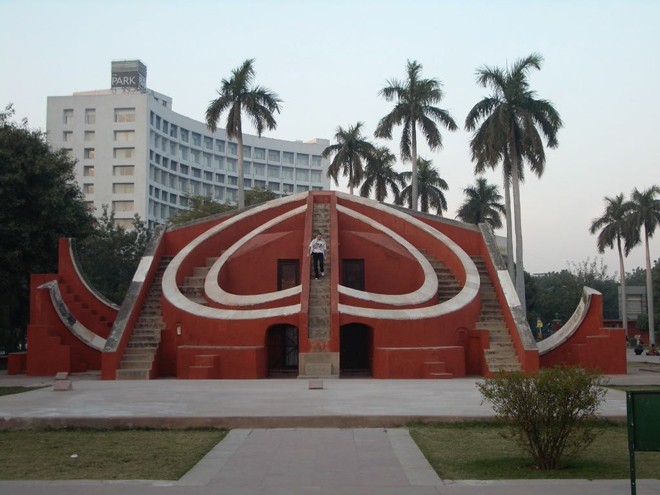
.
The Just a short stroll from Connaught Place is Jantar Mantar, the collection of salmon-coloured structures which were one of Maharaja Jai Singh II's amazing observatories (there is another one in Jaipur - see later). Constructed in 1725 it is dominated by a huge sundial known as Samrat Yantra, the 'Prince of Dials'.
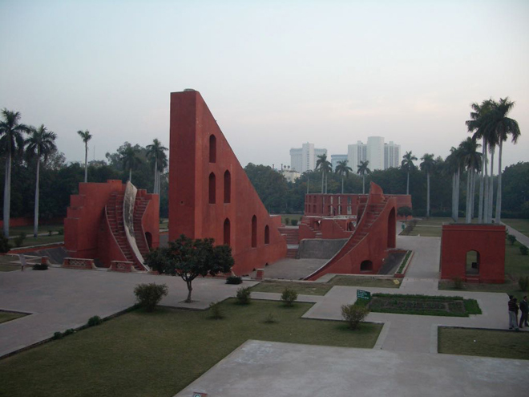
Apart from the Samrat Yantra (a large sundial for calculating time), there is also Jai Prakash Yantra (2 concave hemispherical structures, used to ascertain the position of Sun and other heavenly bodies), Ram Yantra (two large cylindrical structures with open top, used to measure the altitude of stars based on the latitude and the longitude on the earth) and the Mishra Yantra (meaning mixed instrument, since it is a compilation of five different instruments).
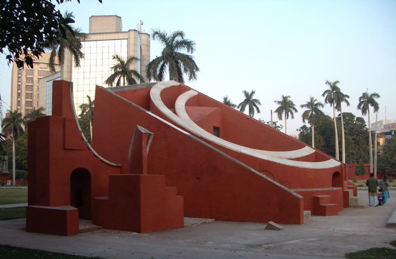
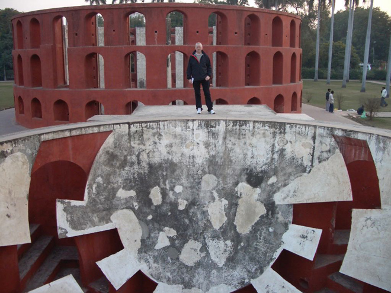
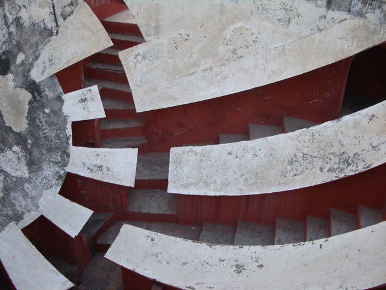
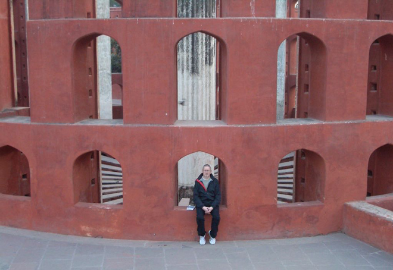
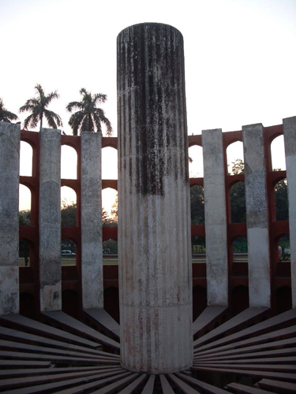
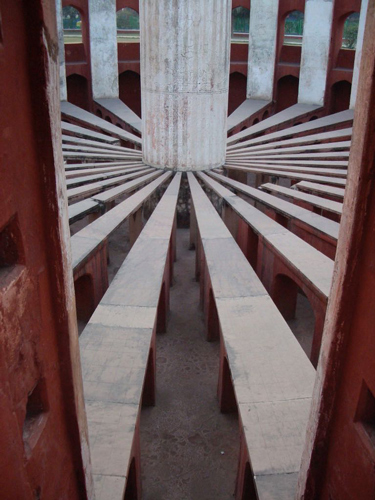
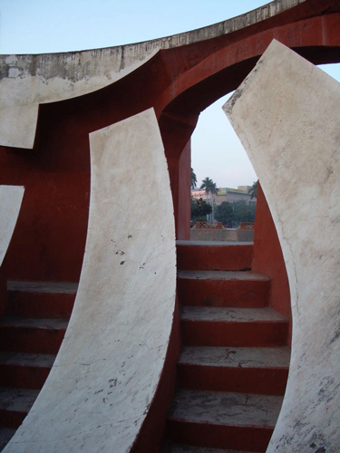
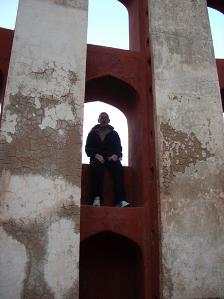
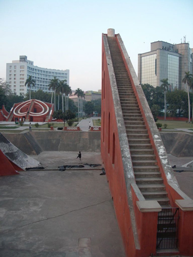
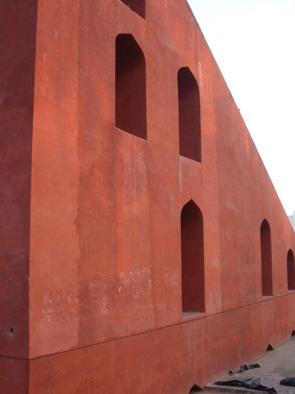
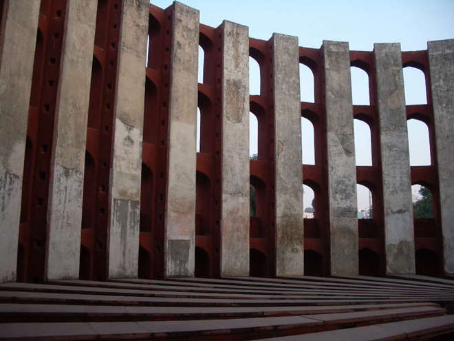
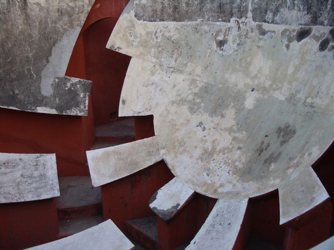
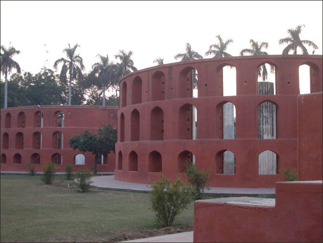
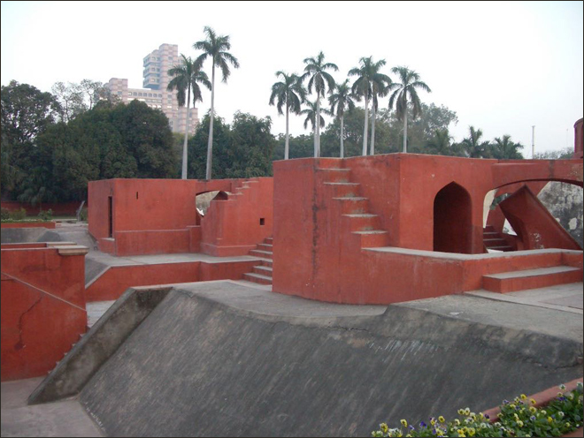
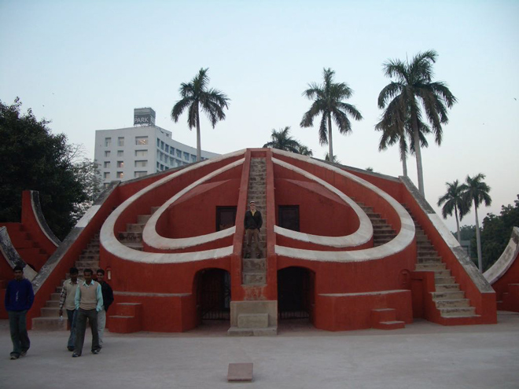
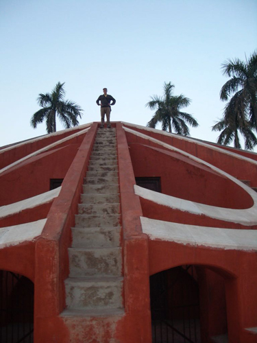
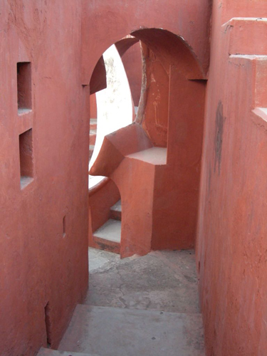
Honeymoon photos for one young couple on holiday.
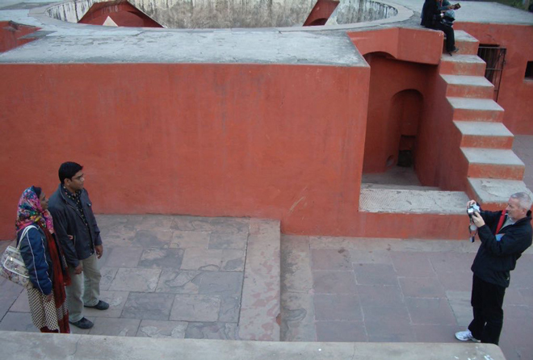